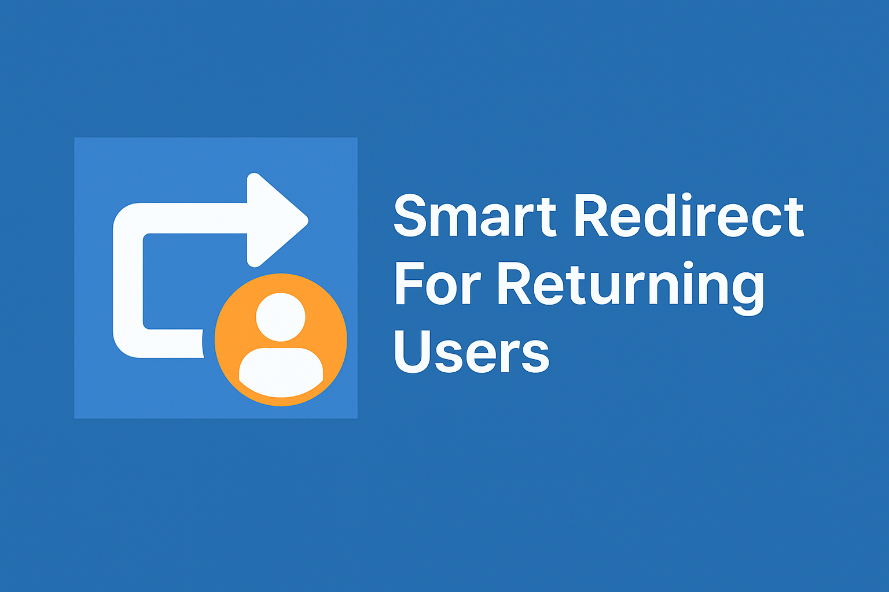

Intelligently redirect users based on cookie logic – with full analytics & GA4 tracking
The plugin checks for a specific cookie on the user’s device. If the cookie exists and matches the expected value, the user is redirected to your custom app or dashboard. Otherwise, they remain on your main site.
Smart Redirect is free and open-source. Download the latest version now:
Documentation and support are available to assist you with setup, configuration, and advanced use cases.